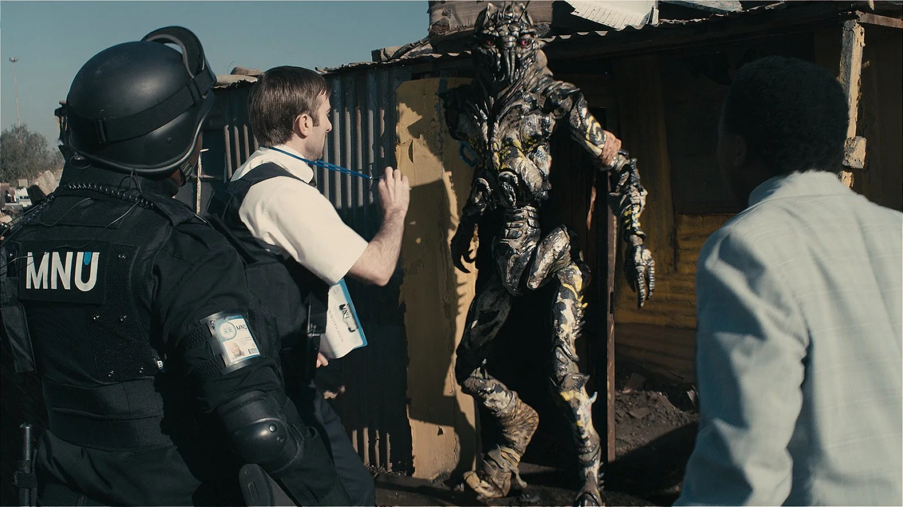

En relación a los efectos visuales, la película construye una integración sólida entre lo real y lo digital: los alienígenas no fueron simplemente agregados en postproducción, sino diseñados para interactuar físicamente con el entorno, generando un realismo que sostiene la narrativa. Esta estrategia se refuerza a través de una decisión estética clave: en lugar de una imagen limpia o futurista, se utiliza cámara en mano, desenfoques y encuadres imperfectos, haciendo que los efectos se perciban como parte de un registro documental. La producción de estos VFX fue además un proceso colaborativo, con múltiples estudios trabajando en distintas etapas, lo que permitió un alto nivel de detalle en la animación, la iluminación y la integración final. El contraste entre el plano original y el plano terminado evidencia esta construcción digital, donde se reemplazan actores, se animan criaturas y se ajustan luces y sombras para lograr coherencia visual.

En cuanto al proceso de rodaje, la película adopta un estilo documental basado en la espontaneidad: muchas escenas fueron filmadas con cámara en mano y los diálogos no estaban completamente guionados, sino que surgían a partir de situaciones abiertas propuestas por el director, lo que permitía reacciones más naturales por parte de los actores. El uso de locaciones reales en Sudáfrica aporta una textura visual auténtica y refuerza el vínculo con el contexto social, mientras que la dirección se orienta a capturar momentos genuinos más que actuaciones controladas, consolidando un tono híbrido entre ficción y documental. Finalmente, el diseño y la producción combinan múltiples técnicas: los alienígenas se construyeron a partir de escultura física, modelado digital y referencias biológicas, logrando criaturas creíbles y expresivas; a su vez, muchos objetos fueron realizados físicamente para facilitar la interacción en escena, y el desarrollo de concept art previo permitió definir la estética, la atmósfera y las características del mundo. El uso de motion capture completa este proceso, trasladando gestos y emociones de los actores a los modelos digitales.